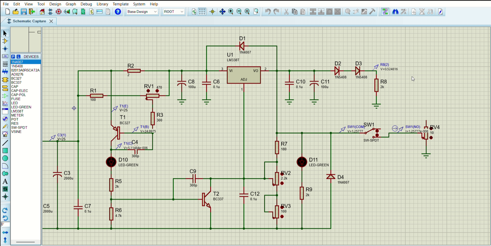

Двухканальный регулируемый линейный блок питания на LM350 — лабораторный источник питания, предназначенный для питания и настройки электронных устройств и схем стабилизированным постоянным напряжением.
Устройство обеспечивает два независимых канала стабилизированного регулируемого напряжения с плавной регулировкой выходного напряжения и встроенной регулируемой защитой по току для предотвращения повреждения питаемых устройств. Применяется в учебных, лабораторных и радиолюбительских целях без необходимости применения дополнительного оборудования.

| Полное наименование | Регулируемый двухканальный линейный блок питания с защитой по току на LM350 |
| Количество каналов | 2 (независимых) |
| Входное напряжение (переменное, на CON1) | 18–20 В AC от внешнего понижающего трансформатора |
| Максимальное внутреннее напряжение | до 25 В DC (после выпрямителя и фильтра) |
| Выходное напряжение VOUT1 | 1,2 – 16,5 В |
| Выходное напряжение VOUT2 | 0 – 15 В |
| Максимальный выходной ток | до 2 А |
| Диапазон ограничения тока | 0,35 – 2 А (регулируемое) |
| Стабилизатор напряжения | LM338T/NOPB (5 А, 40 В) |
| Выпрямитель | Мостовой выпрямитель BR1 (3 А) + диоды 1N4007 / 1N5408 |
| Регулировка | VR1–VR3 (подстроечные 3296W): ограничение тока и регулировка напряжения каналов |
| Световая индикация | 3 × светодиод L-53GT |
| Защита | Регулируемое ограничение тока + предохранитель F1 (2 А) |
Устройство предназначено для эксплуатации в закрытых отапливаемых помещениях (категория размещения 4 по ГОСТ 15150-69) без прямого воздействия влаги. Намокание устройства относится к аварийным ситуациям.
| Температура окружающей среды | +10 °C … +35 °C |
| Относительная влажность воздуха | не более 80 % при +25 °C |
| Атмосферное давление | 84 – 107 кПа |
| Механические воздействия | потоки воздуха до 7 м/с; транспортная тряска с ускорением до 15 м/с² |
| Категория размещения | 4 по ГОСТ 15150-69 |